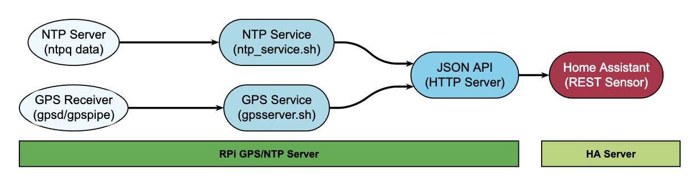
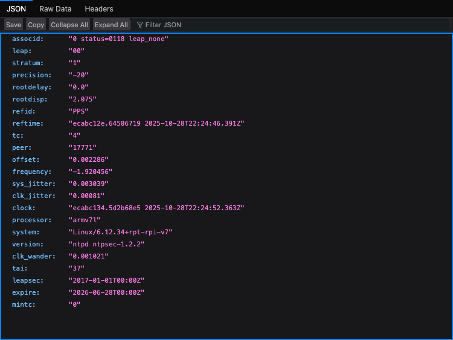
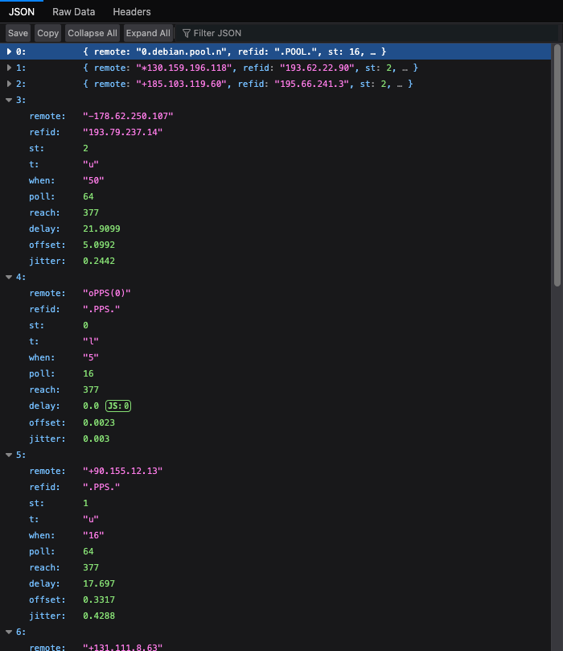
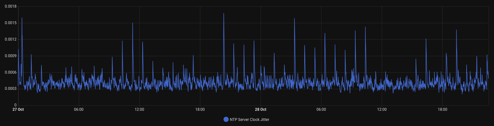
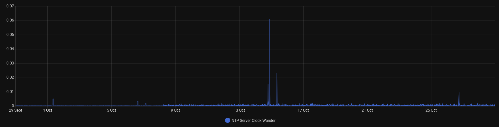
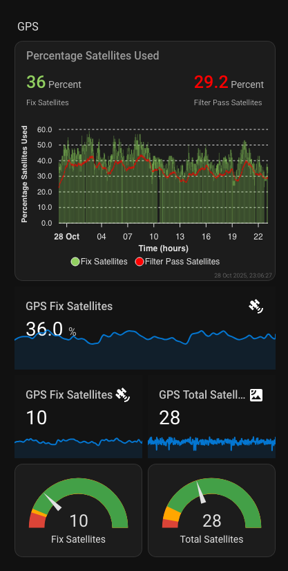

NTP & GPS Home Bridge

This repository provides NTP and GPS monitoring systems for Home Assistant integration on Raspberry Pi.
https://github.com/ToledoEM/GPSNTPHomeBridge
Architecture

Installation
Download the installer script and review its contents before execution, as running unverified code from the internet is not recommended.
Run the installer as root:
sudo ./gpsntphomebridge.shThe installer will check for and install required dependencies (NTP, GPSD, Python 3, jq, and a web server if not present), set up directories, copy scripts, configure systemd services, and start the NTP and GPS monitoring services.
Docker Testing Environment
A Docker container is provided for testing the installer and development purposes only. The Docker environment is not intended for production use as it lacks GPS hardware access and proper systemd support, and I just didnt test that.
# Build test container
docker build -t ntpgps-test .
# Run test container
docker run -p 8081:80 ntpgps-test
# Test endpoints
curl http://localhost:8081/ntpq_crv.json
curl http://localhost:8081/ntpq_pn.json
curl http://localhost:8081/gps.jsonFor production deployment, use the installer on a Raspberry Pi with actual GPS hardware.
Usage
The services collect NTP and GPS data and serve JSON files at the following endpoints:
| Endpoint | Description | Data Type |
|---|---|---|
http://<server_ip>/ntpq_crv.json |
NTP control variables including stratum, frequency, jitter, and precision metrics | NTP System Status |
http://<server_ip>/ntpq_pn.json |
NTP peer information showing synchronization sources and their status | NTP Peer Data |
http://<server_ip>/gps.json |
GPS satellite data including satellite positions, signal strength, and DOP values | GPS Satellite Data |
Configure Home Assistant REST sensors to consume these endpoints as described in the documentation.


Directory Structure
/opt/ntphomebridge/
├── ntp_service.sh # NTP service script
├── gpsserver.sh # GPS service script
├── ntpq_crv_sensor.py # CRV data parser
├── ntpq_pn_sensor.py # Peer data parser
├── gps_sensor.py # GPS data processor
├── raw_ntpq_crv.txt # Raw CRV output
├── raw_ntpq_pn.txt # Raw peer output
├── gps.json # GPS data output
├── ntpq_crv.json # Processed CRV JSON
└── ntpq_pn.json # Processed peer JSON
/var/www/html/
├── ntpq_crv.json # Public CRV JSON endpoint
├── ntpq_pn.json # Public peer JSON endpoint
└── gps.json # Public GPS JSON endpointFiles
gpsntphomebridge.sh: Installer scriptntp_service.sh: NTP service scriptgpsserver.sh: GPS service scriptscripts/ntpq_crv_sensor.py: CRV data parserscripts/ntpq_pn_sensor.py: Peer data parserscripts/gps_sensor.py: GPS data processorREADME.md: This fileLICENSE: MIT license
Key Metrics Explained
1. Stratum
- Description: Indicates the distance from a reference clock
- Values: 0 (reference clock), 1 (directly connected), 2+ (network distance)
- Monitoring: Lower values indicate better time source quality
2. Frequency
- Description: Frequency offset in parts per million (PPM)
- Values: Typically -100 to +100 PPM
- Monitoring: Stable values indicate good oscillator performance
3. System Jitter
- Description: System clock jitter in seconds
- Values: Typically microseconds to milliseconds
- Monitoring: Lower values indicate more stable timing
4. Clock Jitter
- Description: Clock hardware jitter in seconds
- Values: Typically microseconds
- Monitoring: Hardware stability indicator

5. Clock Wander
- Description: Long-term frequency stability
- Values: Typically very small (< 0.001)
- Monitoring: Indicates oscillator aging and temperature effects

6. Precision
- Description: System clock precision (log₂ seconds)
- Values: Negative values (e.g., -20 = 2^-20 seconds ≈ 1 microsecond)
- Monitoring: Hardware capability indicator
GPS Metrics Explained

1. Satellite Information
- PRN: Pseudo-Random Noise code (unique satellite identifier)
- Elevation: Angle above horizon (0-90 degrees)
- Azimuth: Angle from north (0-360 degrees)
- SNR: Signal strength/SNR (0-50+ dB)
- Used: Boolean indicating if satellite is used in position fix
2. Dilution of Precision (DOP) Values
- HDOP: Horizontal Dilution of Precision (position accuracy)
- VDOP: Vertical Dilution of Precision (altitude accuracy)
- PDOP: Position Dilution of Precision (3D position accuracy)
- GDOP: Geometric Dilution of Precision (time and position)
DOP Guidelines: - < 1: Excellent - 1-2: Good - 2-5: Moderate - 5-10: Fair - > 10: Poor
3. Satellite Counts
- Total Satellites: Number of satellites in view
- Used Satellites: Number of satellites used in position calculation
- Satellite Ratio: Percentage of used vs visible satellites
Security Considerations
- Firewall Configuration: Only expose HTTP endpoints to trusted networks
- Authentication: Consider adding basic auth for production deployments
- HTTPS: Use HTTPS in production environments
- Rate Limiting: Implement rate limiting to prevent abuse of your own system
HOME ASSISTANT INTEGRATION
RESTful Sensor Configuration
Add the following configuration to your Home Assistant configuration.yaml file to integrate the NTP and GPS monitoring endpoints.
NTP Server Monitoring
# NTP Server Status Sensor
sensor:
- platform: rest
name: ntp_server_status
unique_id: ntp_server_status
resource: http://YOUR_SERVER_IP/ntpq_crv.json
value_template: "{{ value_json.messages }}"
method: GET
verify_ssl: false
timeout: 30
force_update: true
scan_interval: 60
json_attributes:
- stratum
- frequency
- sys_jitter
- clk_jitter
- clk_wander
- precision
- offset
- refidGPS Satellite Monitoring
# GPS Server Sensor
sensor:
- platform: rest
name: gps_server
unique_id: gps_server
resource: http://YOUR_SERVER_IP/gps.json
value_template: "{{ value_json.messages }}"
method: GET
verify_ssl: false
timeout: 30
force_update: true
scan_interval: 30
json_attributes:
- satellites
# - nSat
# - uSat
# - hdop
# - vdop
# - pdop
# - gdop
# - tdop
# - xdop
# - ydop
# - timeTemplate Sensors (Optional)
Create derived sensors for better dashboard integration:
template:
- sensor:
# NTP Metrics
- name: "NTP Server Stratum"
state: "{{ state_attr('sensor.ntp_server_status', 'stratum') }}"
unique_id: "ntp_server_stratum"
state_class: measurement
icon: mdi:server-network
- name: "NTP Server Frequency"
state: "{{ state_attr('sensor.ntp_server_status', 'frequency') }}"
unique_id: "ntp_server_frequency"
state_class: measurement
icon: mdi:speedometer
- name: "NTP Server System Jitter"
state: "{{ state_attr('sensor.ntp_server_status', 'sys_jitter') }}"
unique_id: "ntp_server_sys_jitter"
state_class: measurement
icon: mdi:chart-line
- name: "NTP Server Clock Jitter"
state: "{{ state_attr('sensor.ntp_server_status', 'clk_jitter') }}"
unique_id: "ntp_server_clk_jitter"
state_class: measurement
icon: mdi:clock
- name: "NTP Server Clock Wander"
state: "{{ state_attr('sensor.ntp_server_status', 'clk_wander') }}"
unique_id: "ntp_server_clk_wander"
state_class: measurement
icon: mdi:clock-alert
- name: "NTP Server Precision"
state: "{{ state_attr('sensor.ntp_server_status', 'precision') }}"
unique_id: "ntp_server_precision"
state_class: measurement
icon: mdi:target
# GPS Metrics
- name: "used_satellites"
state: "{{ state_attr('sensor.gps_server_rest', 'satellites') | selectattr('used', 'eq', true) | list | length }}"
unique_id: "used_satellites"
state_class: measurement
- name: "total_satellites"
state: >
{% if state_attr('sensor.gps_server_rest', 'satellites') %}
{{ state_attr('sensor.gps_server_rest', 'satellites') | length | int }}
{% else %}
0
{% endif %}
unique_id: "total_satellites"
state_class: measurement
- name: "signal_strength"
unique_id: "signal_strength"
state_class: measurement
unit_of_measurement: dBm
state: >
{% set satellites = state_attr('sensor.gps_server_rest', 'satellites') %}
{% if satellites %}
{% set used_sats = satellites | selectattr('used', 'eq', true) | selectattr('ss', 'defined') | list %}
{% if used_sats | length > 0 %}
{{ (used_sats | map(attribute='ss') | map('float') | sum / used_sats | length) | round(2) }}
{% else %}
0
{% endif %}
{% else %}
0
{% endif %}
icon: mdi:signal-variantImportant Notes: - Replace YOUR_SERVER_IP with the actual IP address of your NTP/GPS server - Adjust scan_interval based on your monitoring needs (values in seconds) - For detailed configuration and advanced sensors, refer to the NTP API Documentation and GPS API Documentation - Restart Home Assistant after adding these configurations
Dashboard Example
Create a simple entities card in your dashboard:
type: entities
title: NTP & GPS Monitoring
entities:
- entity: sensor.ntp_stratum
- entity: sensor.ntp_clock_jitter
- entity: sensor.gps_satellites_used
- entity: sensor.gps_satellites_visible
- entity: sensor.gps_hdopLicense
This project is licensed under the MIT License. See the LICENSE file for details.